A plain-English walkthrough of the DevSecOps toolchain — what each piece does, why it matters to the business, and exactly what's real and verified in this repo versus what's an honestly-named gap.
Every DevSecOps tool exists to answer one question at one stage of this pipeline. Code moves left to right; each box is a tool whose only job is to make the next box safer, faster, or more reliable to reach.
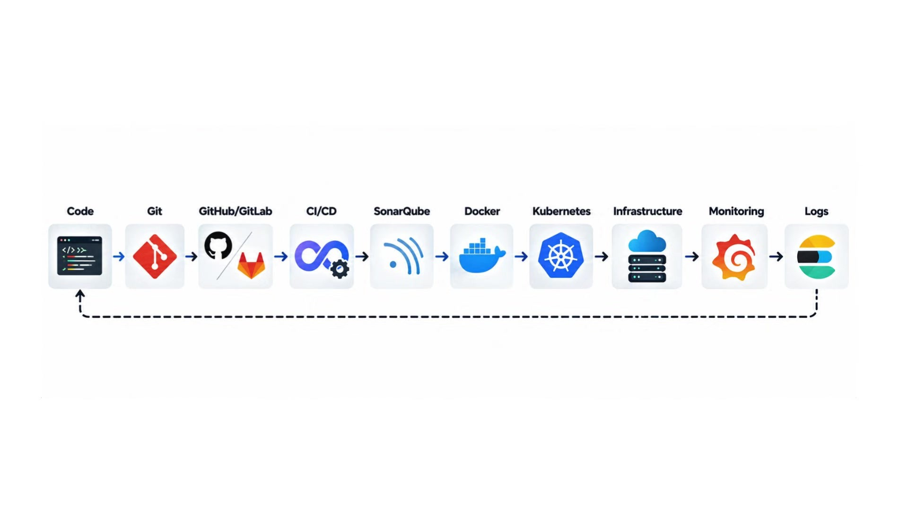
Bottom line: this sprint delivered verified, working capability across all nine required areas of that chain — real infrastructure, real security scanning, real identity, real monitoring, real config management — with the honest remaining gaps named rather than glossed over.
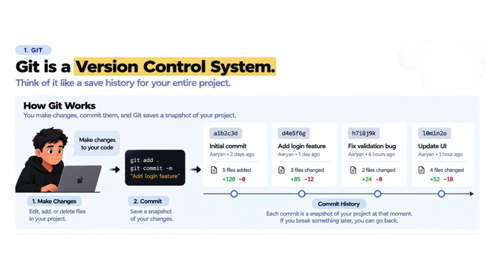
Git is a tool that saves a complete, timestamped history of every change to a project's files, so nothing is ever silently overwritten or lost.
Bottom line: every change to this project is recorded, attributable, and reversible — if something breaks, we know exactly what changed, who changed it, and can roll it back in seconds instead of hours.
git log (this repo's commit history)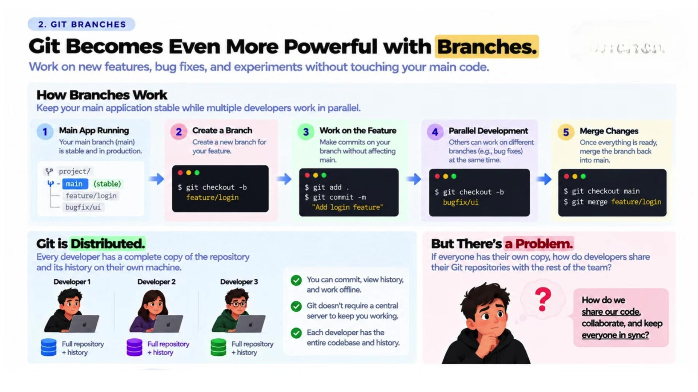
A branch is an isolated copy of the codebase where someone can make changes without affecting the working version everyone else relies on, until those changes are reviewed and merged.
Bottom line: branching lets people experiment or fix things in isolation, so in-progress work never breaks the version that's actually running.
.github/workflows/ci.yml (branch triggers), git status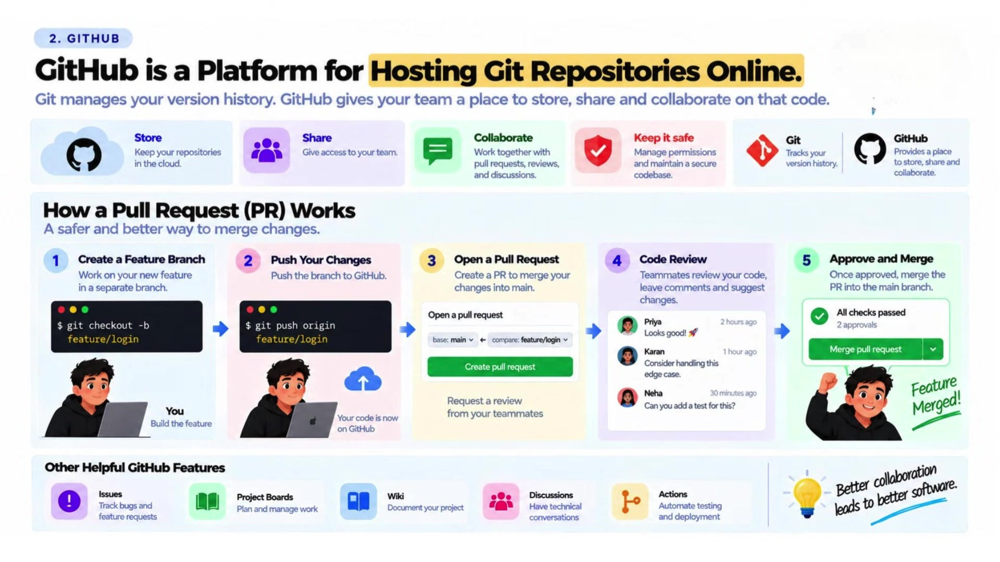
GitHub is a cloud service that stores a project's Git history, makes it accessible to a team from anywhere, and hosts the automation that runs against it.
Bottom line: the code and its full history live somewhere durable and accessible to the whole team, not on one person's laptop — and it's the platform this project's automated build, security scans, and even its public site run from.
.github/workflows/ci.yml, .github/workflows/security.yml, GitHub Pages deployment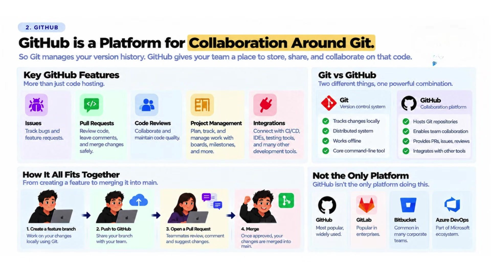
Beyond storing code, GitHub provides pull requests, code review, issue tracking, and automated checks that gate what gets merged, so teams can work on the same codebase without stepping on each other.
Bottom line: collaboration features like pull requests and required checks mean bad or broken changes get caught by a person or a machine before they reach production, not after.
.github/workflows/security.yml (SARIF upload steps), .github/workflows/ci.yml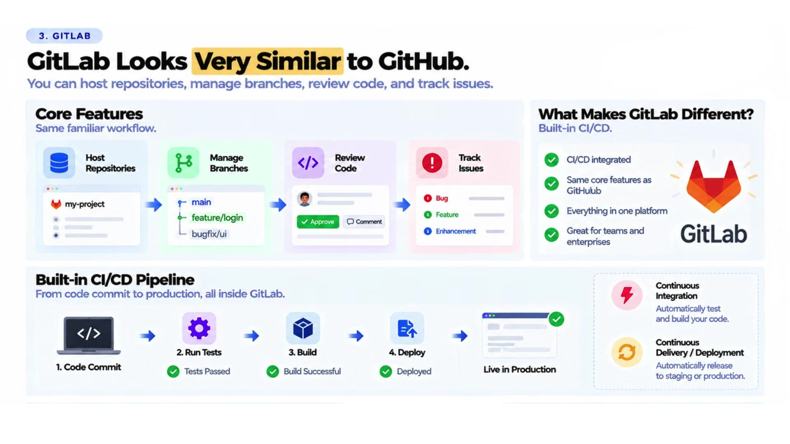
GitLab and GitHub are two different companies' platforms that do largely the same job — hosting Git repositories and running CI/CD — and building for both avoids being locked into either one.
Bottom line: this project's primary platform is GitHub, but its pipeline was also proven to run on GitLab CI unmodified in intent — so a switch or dual-vendor requirement wouldn't mean rebuilding the automation from scratch.
.gitlab-ci.yml, .github/workflows/ci.yml, JOB.html (CI/CD row)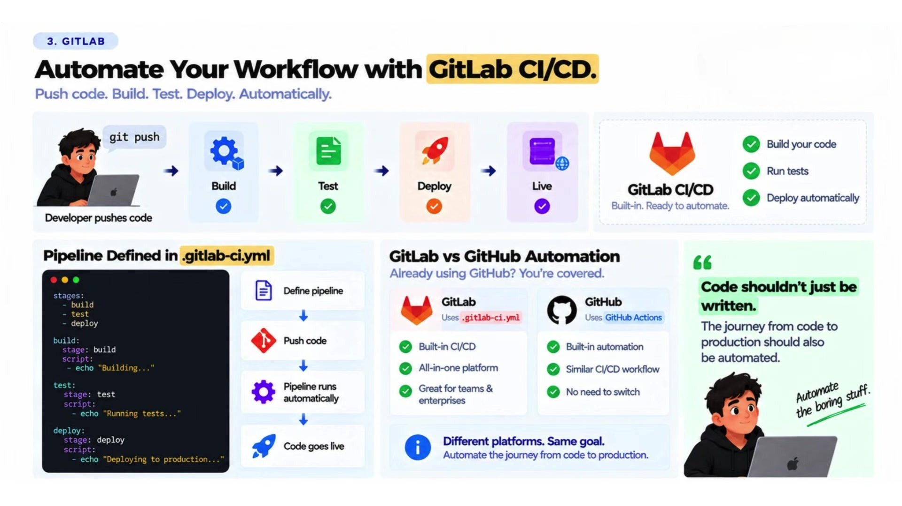
GitLab CI is GitLab's own built-in automation system for running builds, tests, and security scans, using a `.gitlab-ci.yml` file instead of GitHub's `.github/workflows/` files.
Bottom line: the same quality and security gates this project enforces on GitHub are also defined in GitLab's own format — proof the underlying process, not just a specific tool's config, is what's actually solid.
.gitlab-ci.yml, JOB.html (CI/CD pipelines row)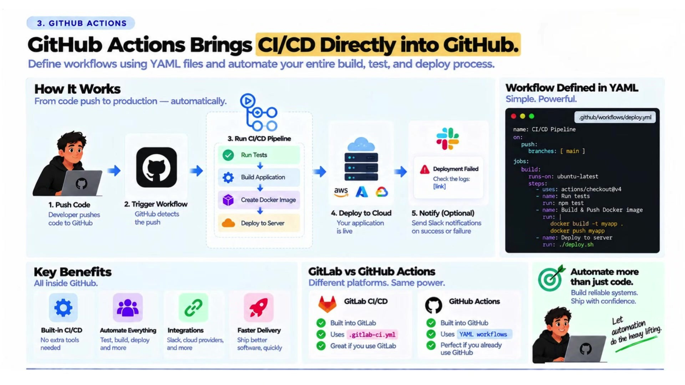
CI/CD (Continuous Integration/Continuous Delivery) is automation that builds, tests, and checks code every time it changes, instead of relying on a person to remember to run those checks manually.
Bottom line: nothing reaches production without passing the same automated checks every single time — no manual gatekeeping step to forget, and no "it worked on my machine" surprises.
.github/workflows/ci.yml, .github/workflows/security.yml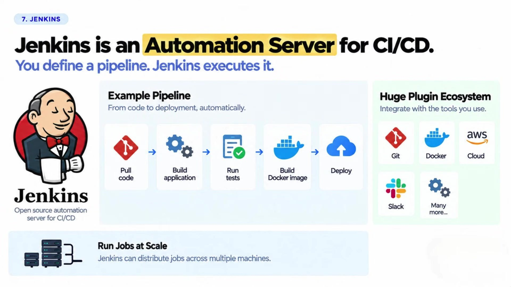
Jenkins is a self-hosted 'automation server' — a program that watches for code changes and automatically runs a checklist of steps (build, test, scan, deploy) every time someone pushes code, instead of a person running those steps by hand.
Bottom line: automating the build/test/deploy checklist means nothing ships without passing the same checks every time, with no step skipped because someone was in a hurry — that's fewer production incidents caused by human error, not a tooling nicety.
.github/workflows/ci.yml, .github/workflows/security.yml, .gitlab-ci.yml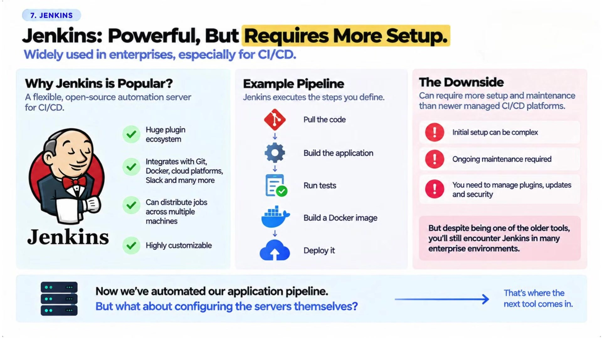
Jenkins can do almost anything (any language, any plugin, any custom workflow) because it's a general-purpose server you install and maintain yourself — the tradeoff is you own the setup, upgrades, and plugin security, unlike a hosted service that manages that for you.
Bottom line: Jenkins buys maximum flexibility at the cost of ongoing care and feeding (patching, plugin management, server uptime) — the right call when requirements are unusual or on-prem is mandated, the wrong call when a team just needs a pipeline running fast with minimal upkeep.
.github/workflows/security.yml, .gitlab-ci.yml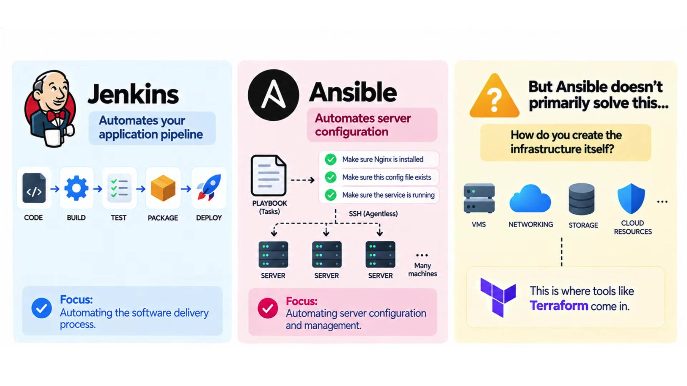
These solve different problems even though both are 'automation': Jenkins (an automation server) decides WHEN to run a pipeline and orchestrates its stages; Ansible (a configuration-management tool) decides WHAT state a machine should end up in and makes it so, idempotently. A shop commonly uses both together — Jenkins as the trigger/orchestrator, Ansible as one of the steps it calls.
Bottom line: don't evaluate these as competitors — Jenkins answers 'did the pipeline run on every change,' Ansible answers 'is the server actually configured correctly right now' — a team missing either one has a real gap, not a redundant tool.
ansible/README.md, .github/workflows/ci.yml, .gitlab-ci.yml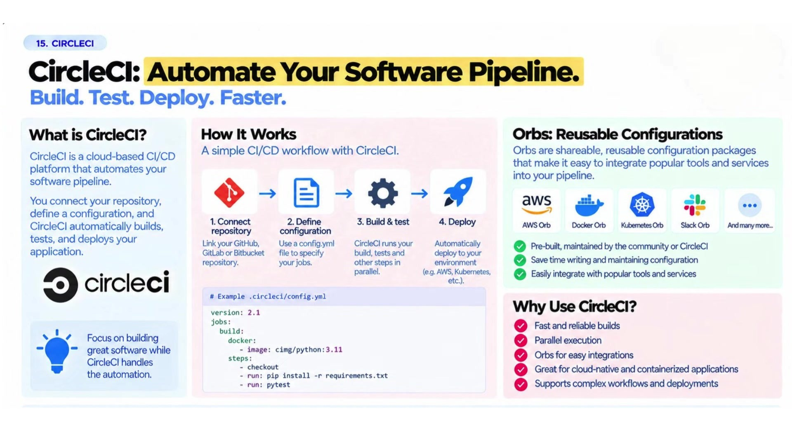
CircleCI is a hosted CI/CD platform (like GitHub Actions or GitLab CI, a competitor to both) that automatically runs a pipeline of build/test/scan/deploy steps against every code change, without a team having to host and maintain the automation server themselves.
Bottom line: a hosted CI/CD platform trades a bit of vendor lock-in for zero server maintenance — the business case is faster setup and less ops overhead than a self-hosted option like Jenkins, at the cost of being tied to that vendor's pricing and outages.
.github/workflows/ci.yml, .github/workflows/security.yml, .gitlab-ci.yml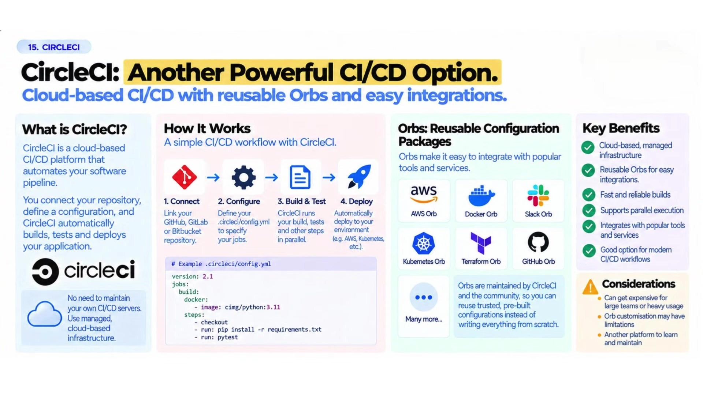
CircleCI is one of several roughly-interchangeable hosted CI/CD platforms (alongside GitHub Actions, GitLab CI, Azure DevOps Pipelines) — the underlying concept (config file defines stages, service runs them on every push, fails the build on a real problem) is the same across all of them, just different YAML dialects and vendor ecosystems.
Bottom line: picking a specific CI/CD vendor matters less than getting the practice right — automated gates on every change, real findings acted on, not staged for a demo. Evaluate a candidate on that practice, not on whether they've personally clicked through this exact vendor's UI.
.gitlab-ci.yml (header comment), .github/workflows/ci.yml, .github/workflows/security.yml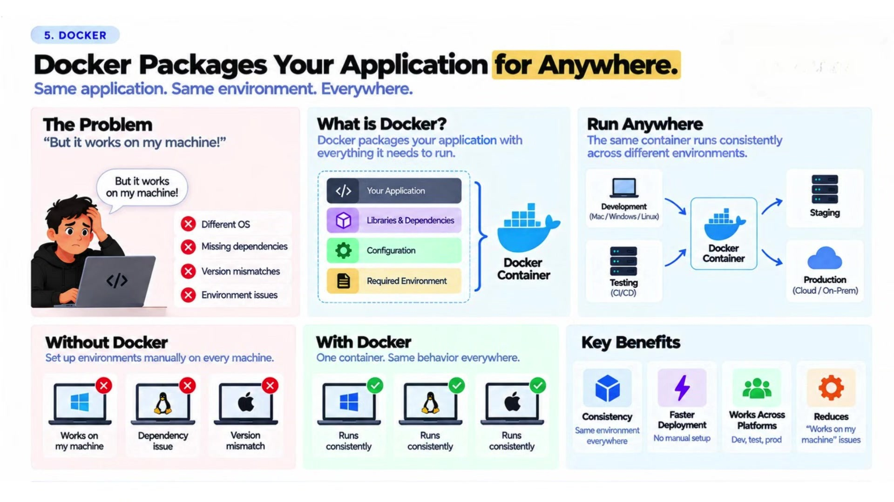
Docker packages an application together with everything it needs to run — code, dependencies, runtime — into a single portable unit called a container image, so it runs the same way everywhere.
Bottom line: "it works on my machine" stops being an excuse — the application runs identically on a developer's laptop, in the test pipeline, and in production because it's the exact same packaged image every time.
app/status-service/Dockerfile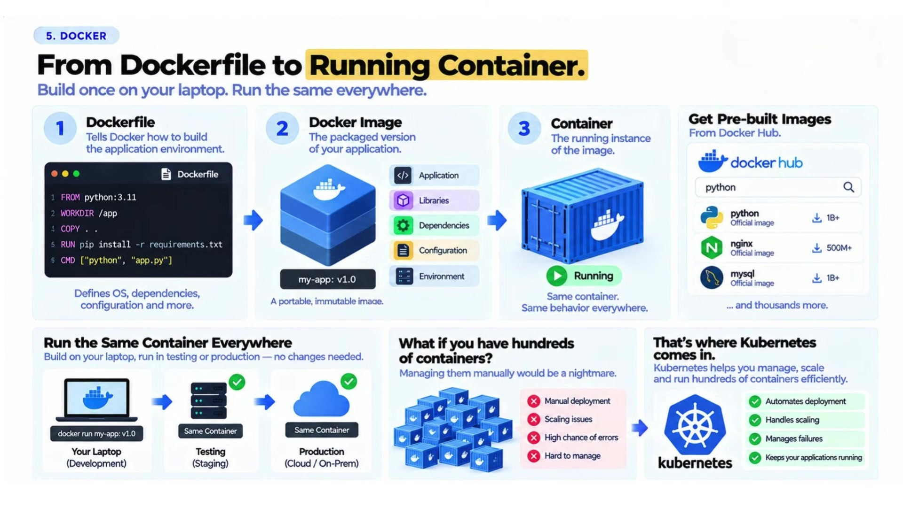
A Dockerfile is a text recipe for building an image; running that image produces a live, isolated container — the actual running instance of the application.
Bottom line: the exact recipe that builds what runs in production is checked into version control and human-readable, so anyone can see precisely what the running application consists of — no undocumented manual server setup.
app/status-service/Dockerfile, k8s/base/deployment.yaml, k8s/cis-benchmark/README.md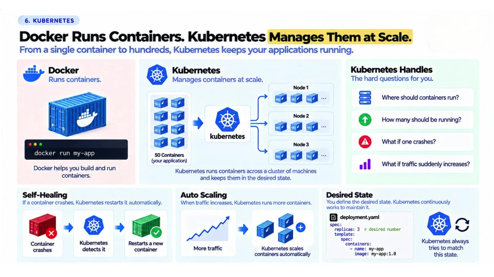
Docker runs one container at a time on one machine; Kubernetes is the layer on top that runs many containers across many machines, automatically restarting failures, spreading load, and rolling out updates without downtime.
Bottom line: Docker alone is fine for one container on one laptop — it's Kubernetes that keeps the application available when a server dies, traffic spikes, or an update is being rolled out, which is what "production at scale" actually requires.
app/status-service/Dockerfile, k8s/base/, k8s/overlays/, k8s/cis-benchmark/README.md, JOB.html (Kubernetes row)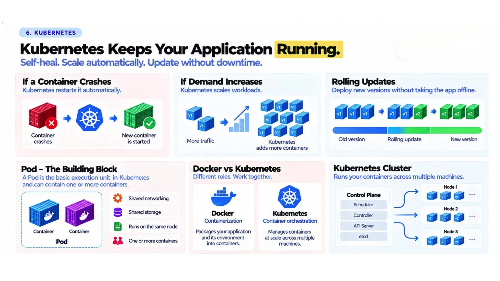
Kubernetes continuously watches an application's running containers and automatically fixes problems — restarting crashed ones, rescheduling them off a failed machine, and never dropping below a minimum number of healthy copies during an update.
Bottom line: the application stays available to users through failures and updates because Kubernetes is actively enforcing that outcome, not because someone is manually watching a dashboard and intervening.
k8s/base/, k8s/overlays/, k8s/cis-benchmark/README.md, JOB.html (Kubernetes row)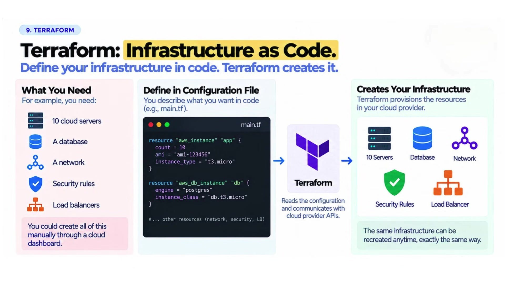
Terraform lets you describe infrastructure (networks, storage, servers, permissions) as version-controlled text files instead of clicking through a cloud provider's web console — run the same file and you get the same infrastructure, every time, reviewable in a pull request like any other code change.
Bottom line: infrastructure defined as code means environments are reproducible, auditable, and stand up in minutes instead of hours of manual console work — and because it's version-controlled, every infrastructure change has a reviewable history, which matters directly for audit and compliance.
infra/terraform/README.md, infra/terraform/modules/aws-platform/kms.tf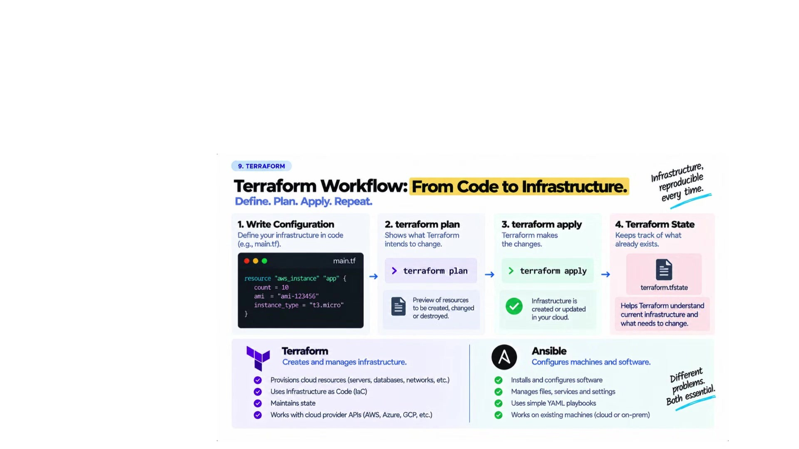
Terraform's normal workflow is three steps: init (download providers, set up state), plan (show exactly what will change, before touching anything), apply (make the change) — the plan step is the safety net that lets a human review an infrastructure change before it happens, the same way a code review happens before a merge.
Bottom line: the plan-before-apply workflow is a built-in review gate — no infrastructure change happens as a surprise, because the exact diff is shown and can be reviewed or blocked before it's real, cutting the risk of an unreviewed change taking down production.
infra/terraform/README.md, infra/terraform/backend.tf, .github/workflows/security.yml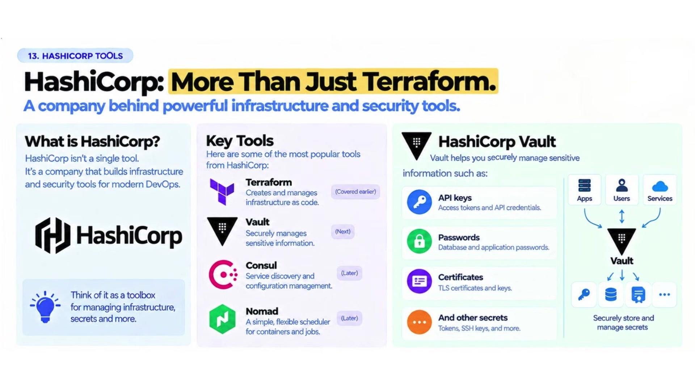
Terraform is HashiCorp's infrastructure-provisioning tool, but the company makes a family of tools for different problems: Vault for secrets management, Consul for service networking/discovery, Nomad for workload scheduling — Terraform is the one most teams meet first, not the whole toolkit.
Bottom line: knowing Terraform doesn't mean the whole HashiCorp ecosystem is covered — secrets management (Vault) in particular is a named, real gap here, worth knowing about before assuming 'HashiCorp experience' means everything's handled.
ansible/README.md (Honest gaps), infra/terraform/README.md (Security choices)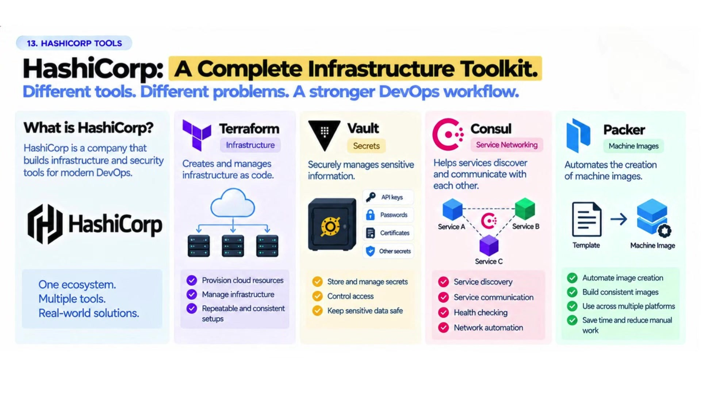
HashiCorp's tools are designed to compose: Terraform provisions the infrastructure a workload runs on, Vault would manage the secrets it needs to run, Consul would let services find and securely talk to each other, Nomad would schedule the workloads themselves — each one solves a distinct layer of the same overall infrastructure problem.
Bottom line: this repo demonstrates the provisioning layer of that toolkit end to end on real infrastructure, with the other layers (secrets, service mesh, scheduling) named as clear, honest next steps rather than claimed as already covered.
JOB.html (Terraform and Kubernetes rows), infra/terraform/README.md, k8s/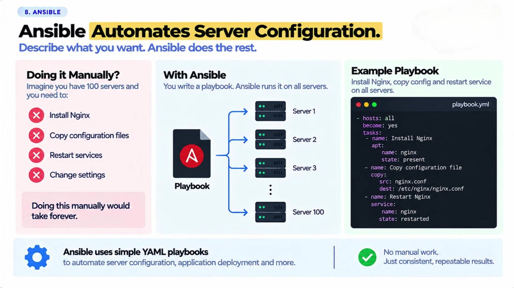
Ansible is a configuration-management tool: once a server or container exists, Ansible answers a different question than 'does it exist' — it makes sure the right software is installed and correctly configured on it, and keeps re-checking that every time it runs, without needing an agent installed on the target.
Bottom line: configuration drifts silently when engineers make manual changes — Ansible re-applies the correct, version-controlled configuration on demand, so 'why is prod different from dev' stops being a mystery and becomes a solved, auditable process.
ansible/README.md, ansible/playbook.yml, ansible/run-cold.txt, ansible/run-idempotent.txtInstead of one security check, this pipeline runs seven different specialized scanners on every code change — each one looking for a different kind of problem, from leaked passwords to vulnerable software libraries.
Bottom line: one scanner catches one class of problem; seven layered scanners catch leaked secrets, insecure code, vulnerable dependencies, vulnerable container images, misconfigured cloud infrastructure, and unsafe Kubernetes settings, all before code reaches production, and all in one place instead of eight disconnected tools nobody checks.
.github/workflows/security.yml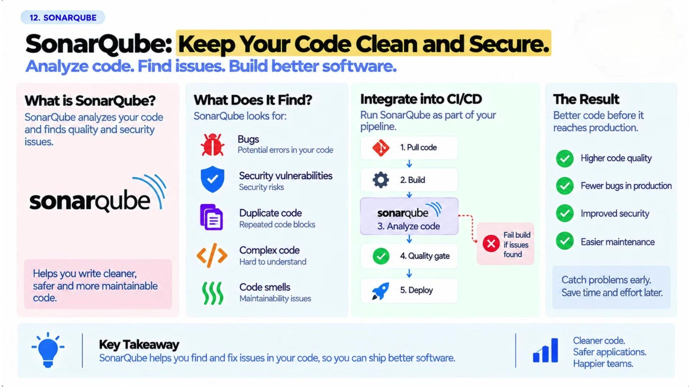
SonarQube is a tool that reads your code automatically and flags security holes and risky patterns before anyone ships them to production.
Bottom line: catching an insecure line of code on someone's laptop costs minutes; catching the same bug after it's live and exploited costs an incident, an audit finding, or a breach. This repo doesn't run SonarQube specifically, but it runs seven other real scanners doing the same job, and one of them already caught a real, exploitable dependency vulnerability before it shipped.
.github/workflows/security.yml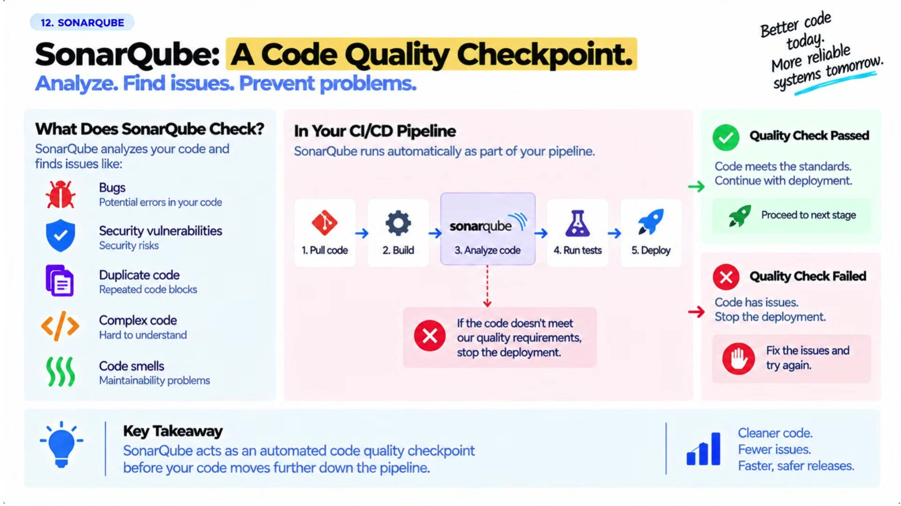
A code-quality checkpoint is an automatic gate in the pipeline that blocks a change from merging if it fails security or quality checks — no human has to remember to check by hand.
Bottom line: a gate that runs automatically on every single change means quality control isn't dependent on a reviewer's attention that day. This repo's gates aren't a policy on paper — they've actually failed builds and forced real fixes.
.github/workflows/security.ymlA STIG is the Department of Defense's official checklist for how a server should be locked down; this scan runs that exact government checklist against a real system and reports which of its 409 rules actually pass.
Bottom line: this produces the specific, DoD-mandated compliance evidence an auditor asks for by name, not a general industry best-practices claim — and it's the real, unremediated baseline number an ATO package needs before remediation work begins.
stig/README.md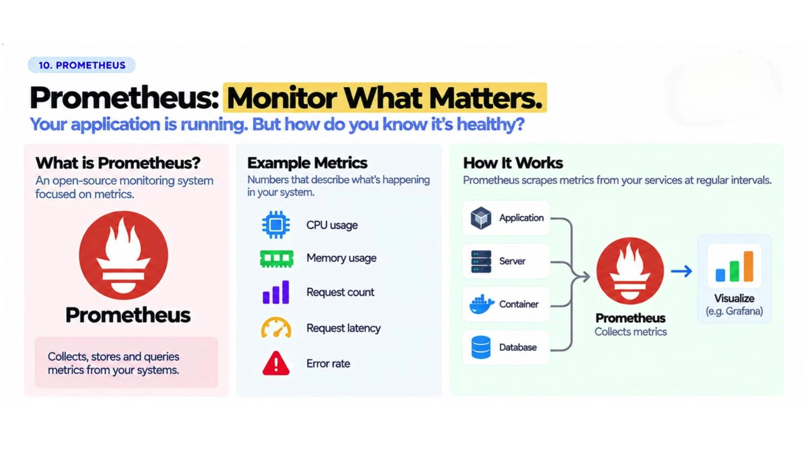
Prometheus is a tool that constantly asks every system 'are you healthy and how busy are you right now?' and keeps a timestamped history of the answers.
Bottom line: Prometheus turns 'the app feels slow' into 'p95 latency on /checkout jumped from 80ms to 900ms at 2:14pm' — the difference between guessing at an outage and diagnosing it in minutes.
observability/README.md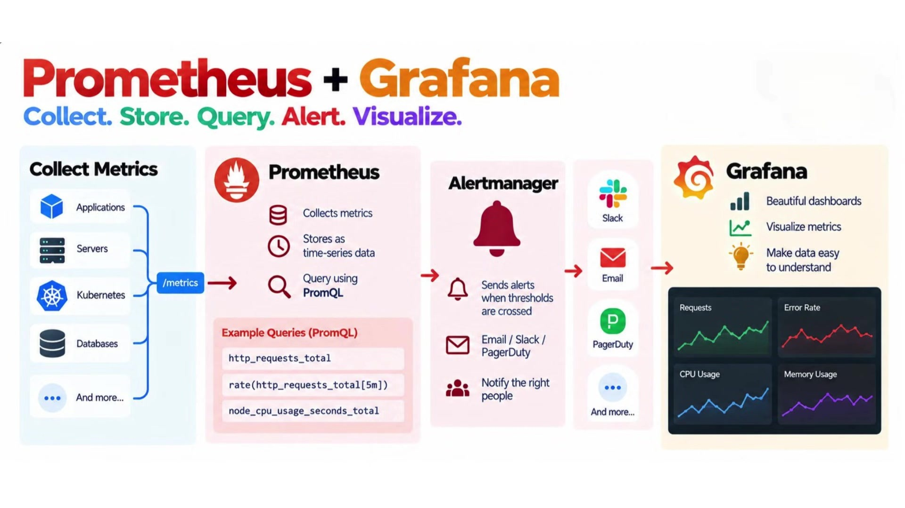
Prometheus collects and stores the raw numbers; Grafana is the second tool that turns those numbers into dashboards a human can actually look at and understand.
Bottom line: this pairing is what lets an engineer spot a problem forming before customers file a ticket about it, instead of finding out from an angry email.
observability/README.md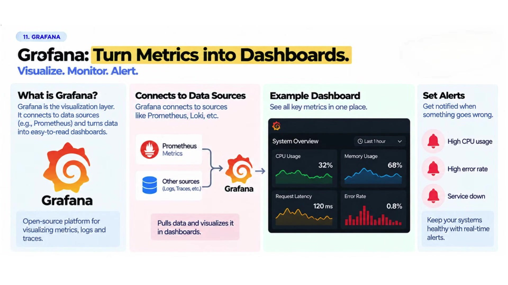
Grafana is the visualization layer: it takes the numbers Prometheus is storing and draws them as graphs, gauges, and alerts on a screen someone can watch.
Bottom line: a dashboard means the team notices a slowdown on a graph before it becomes a customer complaint — that's the cost difference between proactive and reactive incident response.
observability/README.md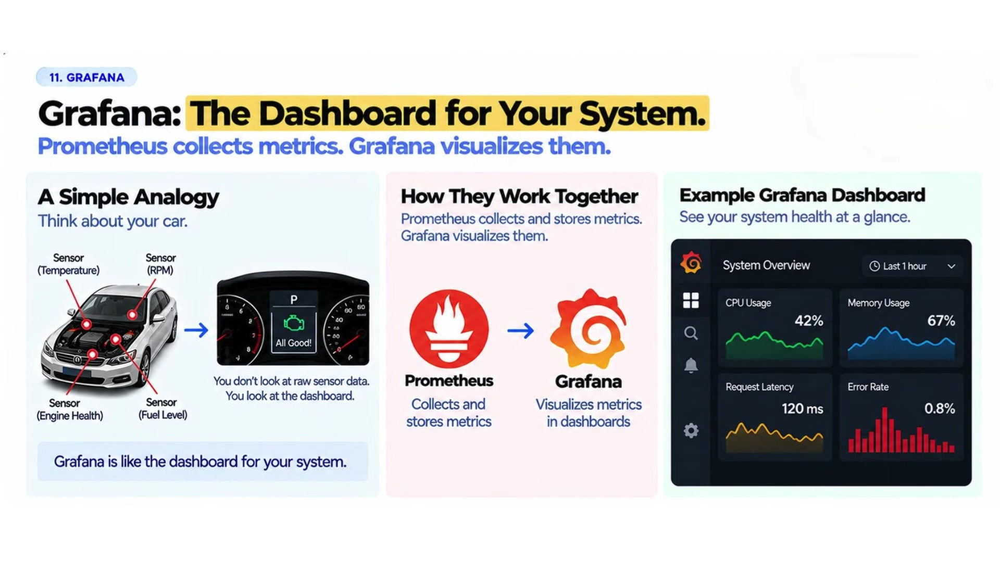
A dashboard is a saved, reusable set of panels answering the specific questions that matter for one system — in this case, 'is this web service fast, and is it working.'
Bottom line: a good dashboard is built around the questions leadership actually asks during an incident ('how bad is it, for whom, since when') rather than a wall of generic charts nobody reads.
observability/grafana/dashboards/status-service.json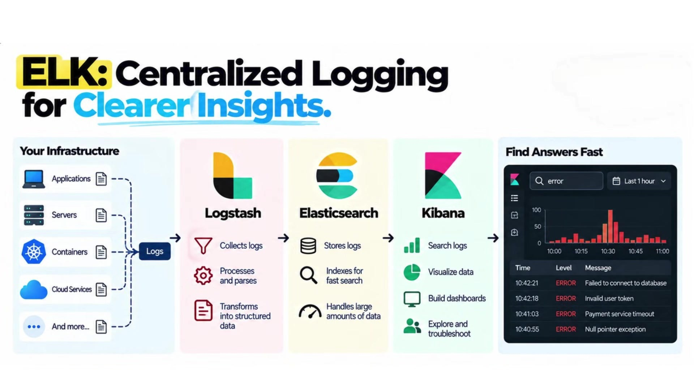
Centralized logging means every system ships its log lines to one searchable place, instead of an engineer having to SSH into ten different servers to piece together what happened.
Bottom line: centralized logging is the tool for 'what exactly happened, in what order, across which services' — a different but related question from the 'is it healthy right now' question Prometheus and Grafana answer.
not present in this repo — see observability/README.md for what is actually deployed instead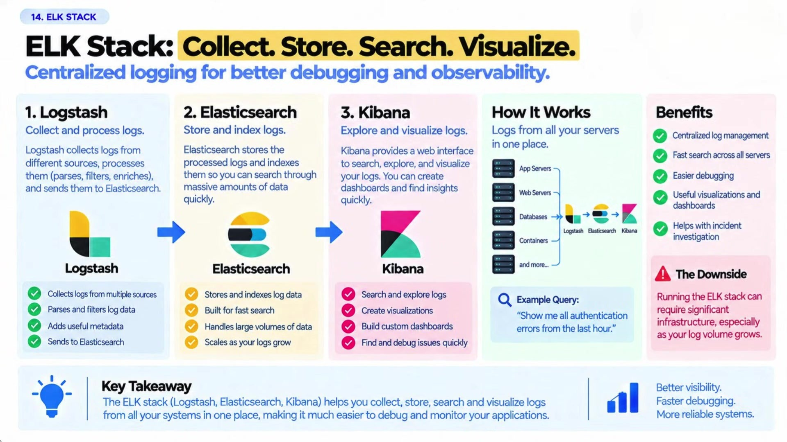
ELK is normally three tools working together: Logstash (or Beats) collects and ships log lines, Elasticsearch stores and indexes them for fast search, and Kibana provides the search/visualization UI.
Bottom line: this is useful background for evaluating a candidate's breadth, but it should be named as a gap here, not a delivered capability — in this repo, the metrics half of observability (Prometheus + Grafana) is the real, verified piece.
not present in this repo — see observability/README.md for the real, deployed alternativeActive Directory is the system that answers 'who is this person, and what are they allowed to touch' for every other system in an environment — the identity backbone everything else trusts.
Bottom line: without a working identity layer, every other system either has to manage its own separate logins (a security and audit nightmare) or trusts nothing at all — this is the foundation, not an optional extra.
ad-lab/README.mdCoder is a server that lets engineers spin up a ready-to-code development environment on demand, instead of spending a day manually installing tools on their own laptop.
Bottom line: faster, standardized developer onboarding means new engineers are writing productive code in minutes rather than losing a day (or more) to local environment setup — real time and cost saved per hire.
coder/README.mdEvery DevSecOps tool exists to answer one specific, plain-English question — the goal isn't memorizing tool names, it's knowing which question needs answering and picking (or learning) the tool that answers it.
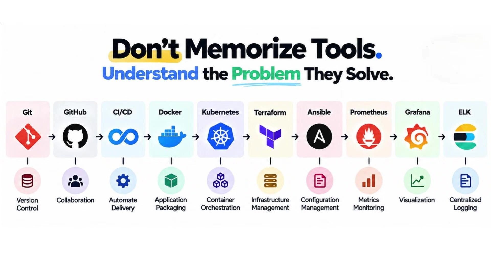
Bottom line: a candidate who can explain why they'd reach for Terraform versus Ansible versus Prometheus — in one sentence each — is more valuable long-term than one who's just used the most tools, because the underlying questions don't change even when the specific tools do.